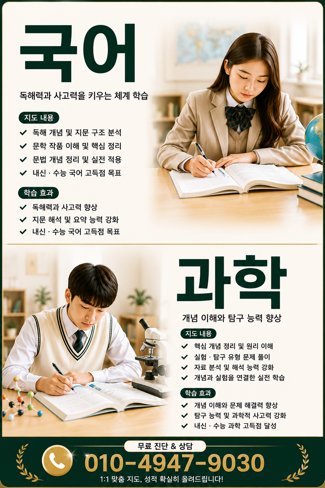

만수동에서 시작하는 중등 학습습관의 기본을 다지는 방법은 무엇일까
만수동 학부모와 학생들이 공통으로 걱정하는 것은 학교생활과 가정 학습 분위기가 어떻게 맞물리느냐다. 지역의 학교환경은 학습환경과 공부태도에 큰 영향을 주며, 작은 습관의 차이가 내신관리와 수행평가의 성패로 이어지기도 한다. 이 글은 만수동이라는 지역 맥락 속에서 중등 공부습관, 자기주도학습, 내신관리, 시험대비 등을 정보형 허브의 관점으로 정리한다. 특히 학습환경이 어떻게 형성되고 또 어떻게 바뀌는지에 초점을 맞춰 지역 특성에 맞춘 실천법을 제시한다.

만수동의 학습환경이 중등 공부습관을 어떻게 형성하는지 이해하기
지역 학습환경은 교실과 가정의 연계성, 학원과 학교의 관계, 이웃의 공부 분위기로 구성된다. 만수동은 주거 공간이 비교적 촘촘하고 가족 구성원이 많아 자율학습 공간이 제한될 때가 있다. 이때 중요한 것은 조용한 시간대의 확보와 스마트폰 등 주의 산만 요인을 최소화하는 습관이다. 학부모가 가정에서의 예습복습 루틴을 함께 설계하면 학생은 중등 학습태도와 집중력을 자연스럽게 끌어올리게 된다.

중등 공부습관을 기르는 핵심 습관과 실전 연결법
중등 학습습관은 매일의 짧은 연습이 누적되어 큰 힘이 된다. 예를 들어 수학의 경우 매일 30분간 개념 정리와 10문제 풀이를 습관화하고, 국어나 영어는 읽기 시간과 어휘 암기 시간을 체계적으로 분리해 두는 방식이 효과적이다. 만수동에서 자주 들리는 고민은 ‘집에서 집중하기 어렵다’인데, 작은 공부 구역 마련과 시간표 시각화를 통해 해결 가능하다. 목표를 눈에 보이게 두고, 실패를 빠르게 수정하는 피드백 시스템이 중요하다.

만수동 학부모가 자주 묻는 자기주도학습의 시작점은 어디일까
자기주도학습은 학습 목표 설정에서 시작한다. 중1은 과목별 기초 다지기, 중2는 내신 난도 상승에 대비한 심화 학습, 중3은 고입 대비 긴 호흡의 계획을 요구한다. 지역 상황상 가족 구성원과의 대화로 학습 의지를 강화하고, 오답정리와 복습 루틴을 구조화하면 자기주도성이 자발적으로 커진다. 만수동에서 실제 사례를 보면, 학생이 스스로 학습 계획표를 작성하고 주간 목표를 공유하는 방식으로 동기부여가 강화된다.

실전에서 중요한 중등 독해력과 문해력 향상의 구체적 방법
독해력은 국어뿐 아니라 모든 과목의 성취도와 직결된다. 만수동의 교실에서는 글의 핵심을 파악하는 스킬, 자료에서 필요한 정보를 추출하는 법, 비판적 사고를 촉진하는 질문 만들기를 중점적으로 연습한다. 문해력은 어휘 확장과 문장 구성의 유연성으로 이어지는데, 매일 짧은 읽기와 요약, 그리고 새로운 어휘를 문맥 속에서 활용하는 활동이 도움이 된다. 지역 내 학습공간의 조용한 분위기를 활용해 꾸준히 훈련한다.
중등 시간관리와 예습복습의 연결고리를 어떻게 만들까
시간관리는 학습의 출발점이자 마무리다. 만수동의 많은 학생들은 하루 일과표를 시각화하고, 과목별로 예습과 복습 시간을 배정한다. 예습은 새 교재의 개요를 파악하는 수준에서 시작하고, 복습은 오답노트를 통해 약점을 보완하는 방식으로 진행한다. 주간 계획을 세우고, 주말에 한 주를 점검하는 루틴이 고정되면 학습의 흐름이 매끄럽게 유지된다.
수행평가를 준비하는 원칙과 지역적 특성이 주는 이점
수행평가는 단순 암기가 아닌 사고력과 문제해결력을 평가한다. 만수동의 사례에서는 수행평가를 위해 실생활 맥락에서 문제를 구성하고, 과제의 목적과 평가 기준을 학생 스스로 확인하도록 돕는다. 지역의 학교 생활에서 발표나 보고서 작성이 잦은 만큼, 소통 능력과 자료 해석 능력을 함께 길러 두면 성적 개선에 직접적인 도움이 된다.
방학학습을 실제로 활용하는 방법과 만수동의 환경 고려
방학은 학습 공백을 메우는 기회다. 만수동은 지역 도서관과 공공시설의 이용률이 높아 무료로 활용 가능한 학습 자원이 많다. 방학 동안의 목표를 긴 과제보다는 주간 목표로 나누고, 독해력 강화와 어휘 확장을 병행한다. 수행평가를 염두에 둔 프로젝트형 학습이나 가정 내 실험 활동도 동기를 자극하는 좋은 방법이다.
자주 겪는 지역 학부모 고민에 대한 현실적 대응
만수동의 학부모는 무엇보다 시간 관리, 학습 환경, 학습 분위기 사이의 균형에 자주 난감을 느낀다. 이 글은 지역의 특징을 반영해 가정-학교 간 협력의 구체적 가이드를 제공한다. 아이의 흥미를 존중하되, 학습의 기본기와 습관을 꾸준히 다지는 방향으로 접근하면 지역 내 학부모의 고민은 점차 줄어든다.
사례 1
중2인 학생 A는 만수동의 학교 적응이 비교적 빨랐으나 수학에서 학습격차가 생겼다. 주 3회 시간관리 훈련과 함께 오답정리 노트를 도입했고, 독해력 강화도 병행했다. 6주 후 내신 대비에서 수학 점수가 눈에 띄게 상승했고, 영어 읽기 속도도 개선되었다. 다만 과목별 수행평가의 차이가 있어 생활기록부의 흐름을 맞추는 데 집중했다.
사례 2
중1인 학생 B는 친구들과의 학습 분위기에 영향을 많이 받았다. 만수동의 학습환경을 활용해 조용한 학습구역을 확보하고, 예습복습 루틴을 습관화했다. 어휘력과 독해력이 초기보다 크게 향상되었고, 학교 생활 적응도 원활해졌다. 장기적으로는 자기주도학습의 기초를 다지며 성취감을 느꼈다.
FAQ — 자주 묻는 질문과 간단한 답변
- 중등 공부습관을 시작하려면 어떤 목표부터 세우나요?일주일의 작은 목표를 먼저 설정하고, 달성 여부를 점검하는 루틴을 만들어야 합니다.
- 내신관리에 가장 먼저 확인할 부분은 무엇인가요?과목별 현재 성취도와 시험 형태를 파악하고, 오답노트를 통한 약점을 체계적으로 보완하는 것이 의미가 있습니다.
- 독해력 향상을 위해 어떤 활동이 도움이 되나요?짧은 글의 핵심 파악, 요약 연습, 모르는 어휘의 맥락 파악을 반복하는 활동이 효과적입니다.
- 자기주도학습을 아이가 싫어하지 않게 하는 방법은?관여를 최소화하되, 목표 설정과 피드백 과정에 아이의 의견을 반영하는 것이 좋습니다.
- 중3 준비에 특히 중요한 포인트는 무엇인가요?고입 고유의 평가 요소를 파악하고, 장기 계획과 수행평가 전략을 미리 준비하는 것이 필요합니다.